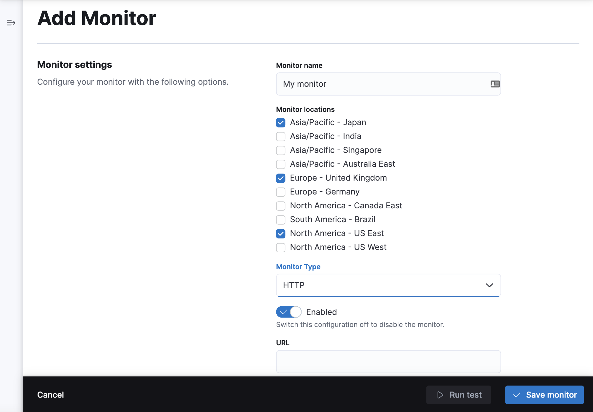

Create monitors in the Synthetics appedit
This functionality is in beta and is subject to change. The design and code is less mature than official GA features and is being provided as-is with no warranties. Beta features are not subject to the support SLA of official GA features.
You can create synthetic monitors directly in the Synthetics app in Kibana.

This is one of two approaches you can use to set up a synthetic monitor.
Prerequisitesedit
To try this beta functionality, first you need to enable it in Kibana:
- Go to Observability → Synthetics (beta).
-
On the Management tab, review the terms and conditions and click Enable to start using the Synthetics app.
To enable Monitor Management, you must be logged into Kibana as a user with the privileges described in Setup role.

You should decide where you want to run the monitors before getting started. You can run monitors on one or both of the following:
- Elastic’s global managed testing infrastructure: With Elastic’s global managed testing infrastructure, you can create and run monitors in multiple locations without having to manage your own infrastructure. Elastic takes care of software updates and capacity planning for you.
- Private Locations: Private Locations allow you to run monitors from your own premises. To use Private Locations you must create a Private Location before continuing. For step-by-step instructions, refer to Monitor resources on private networks.
If you are setting up Synthetics for a deployment configured with traffic filters, connections into Elasticsearch are restricted and results will not be able to be written back into Elasticsearch unless granted. For more details, refer to Use Synthetics with traffic filters.
Add a lightweight monitoredit
To use the Synthetics app to add a lightweight monitor:
- Go to Synthetics (beta) in Kibana.
- Click Create monitor.
- Set the monitor type to HTTP Ping, TCP Ping, or ICMP Ping.
- In Locations, select one or more locations.
- Set the Frequency, and configure the monitor as needed.
- Click Advanced options to see more ways to configure your monitor.
- (Optional) Click Run test to verify that the test is valid.
-
Click Create monitor.

If you’ve added a Private Location, you’ll see your new Private Location in the list of Locations.

Add a browser monitoredit
You can also create a browser monitor in the Synthetics app using an Inline script.
An inline script contains a single journey that you manage individually. Inline scripts can be quick to set up, but can also be more difficult to manage. Each browser monitor configured using an inline script can contain only one journey, which must be maintained directly in Kibana.
If you depend on external packages, have your journeys next to your code repository, or want to embed and manage more than one journey from a single monitor configuration, use project monitors instead.
To use the Synthetics app to add a browser monitor:
- Click Create monitor.
- Set the monitor type to Multistep.
- In Locations, select one or more locations.
- Set the Frequency.
-
Add steps to the Script editor code block directly. The
journeykeyword isn’t required, and variables likepageandparamswill be part of your script’s scope. You cannotimportany dependencies when using inline browser monitors.
Alternatively, you can use the Script recorder option. You can use the Elastic Synthetics Recorder to interact with a web page, export journey code that reflects all the actions you took, and upload the results to Synthetics app. For more information, refer to Use the Synthetics Recorder.
-
Click Advanced options to see more ways to configure your monitor.
- Use Data options to add context to the data coming from your monitors.
- Use the Synthetics agent options to provide fine-tuned configuration for the synthetics agent. Read more about available options in Use the CLI.
- (Optional) Click Run test to verify that the test is valid.
- Click Create monitor.
View in Kibanaedit
Navigate to the Synthetics app in Kibana, where you can see screenshots of each run, set up alerts in case of test failures, and more.
If a test does fail (shown as down in the Synthetics app), you’ll be able to view the step script that failed,
any errors, and a stack trace.
For more information, refer to Analyze data from synthetic monitors.
Next stepsedit
Learn more about:
- Writing user journeys to use as inline scripts
- Using the Synthetics Recorder
- Configuring lightweight monitors